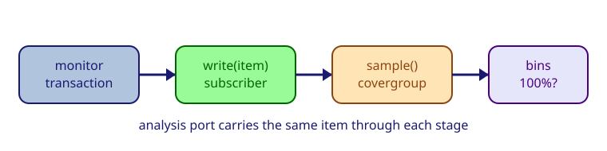

Assertions answer "did something illegal happen?" — functional coverage answers "did we exercise the scenarios we care about?". Without coverage, passing simulation only means no bugs were triggered by the stimulus you happened to run.

A reusable coverage collector has this shape:
class <collector> extends uvm_subscriber #(<item_type>);
covergroup <group>;
<coverpoints>
endgroup
function void write(<item_type> item); <group>.sample(); endfunction
endclass
In UVM, coverage lives in a uvm_subscriber — a component with a built-in analysis export. Every transaction written to it calls write(), which samples the covergroup.
Open mem_coverage.sv and complete three things:
Coverage holes are most often found by removing or widening constraints and re-running. If
cp_addrmisses addresses 12-15, those addresses were never generated — adjust the sequence stimulus to cover the full range.